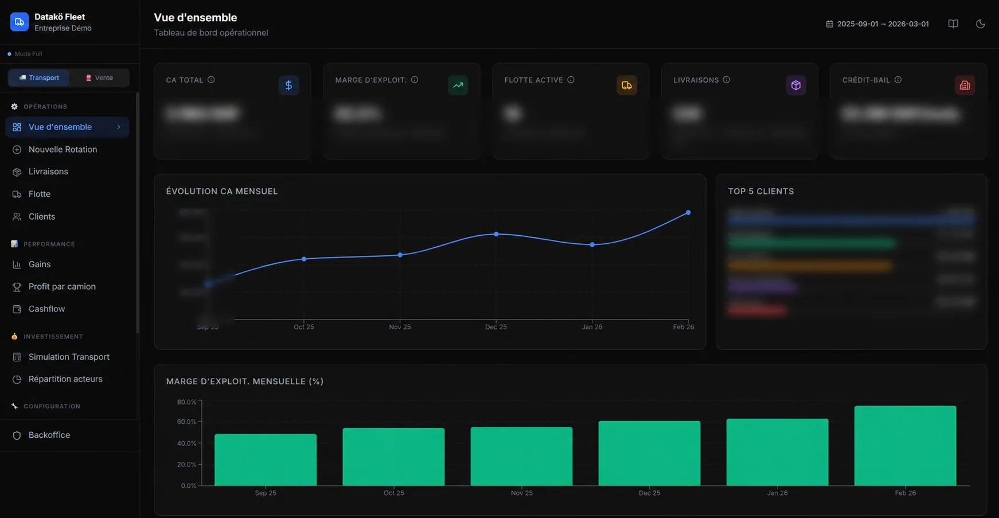
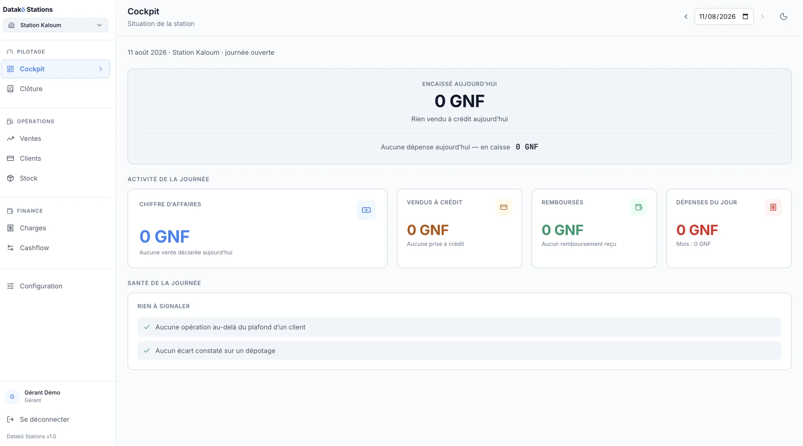

Available · Transport & logistics
Datakö Fleet
Manage transport operations from end to end. One execution platform for trips, drivers and deliveries, connected to field realities.
The Datakö platform
Beyond consulting, Datakö builds business applications for the field. Our solutions structure operations, track performance and help you regain control over margins.
Less complexity, more visibility and decisions made at the right time.

Manage transport operations from end to end. One execution platform for trips, drivers and deliveries, connected to field realities.

Manage your station day by day. Field operations feed the cockpit directly, from the pump through daily closing.
We continue to expand the platform to address the operational constraints of other key sectors pragmatically.
The next module in the range.
Manage heavy logistics, track on-site equipment and secure production in demanding environments.
Anticipate shortages and organize warehouses to deliver faster at the best cost.
Connect financial performance with field teams to allocate resources effectively.
Datakö operational DNA
Your tools must work without reliable wifi or heavy training. Our applications account for real technological constraints, especially in West Africa.
AI runs in the background. Teams only see what matters: simple actions and clear priorities.
No new isolated system. Our API-first applications connect to existing software, accounting platforms and ERPs.
Our teams also build custom Data & AI solutions for your business and constraints.
See our servicesAssess your organization’s digital maturity and identify Data & AI priorities.
Start the diagnosticLet’s see how a Datakö solution can make your activity clearer and easier to manage.